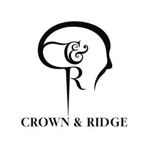

Trade Mark Journal No.2025/045 7 November 2025
UK00004277319 13 October 2025 (3,44)

- Class 3
- Hair treatment preparations; Hair permanent treatments; Hair strengthening treatment lotions; Wax treatments for the hair; Hair preparations and treatments; Hair care serums; Hair preservation treatments for cosmetic use; Hair care creams; Non-medicated scalp treatment cream; Cosmetic preparations for the hair and scalp; Conditioners for treating the hair; Hair shampoos; Non-medicated hair treatment preparations for cosmetic purposes; Cosmetics for the treatment of dry skin; Hair care lotions; Hair serums; Hair care preparations; Hair rinses [for cosmetic use]; Scalp treatments (Non-medicated -); Hair relaxers; Hair rinses; Oil baths for hair care; Hair creams; Hair care creams [for cosmetic use]; Hair styling gel; Hair care masks; Hair styling lotions; Cosmetic hair care preparations; Hair gel; Hair lighteners; Styling sprays for the hair; Hair emollients; Hair dyes; Hair removal and shaving preparations; Hair sprays; Hair care agents; Hair styling spray; Shampoos for human hair; Bleaching preparations for the hair; Hair care lotions [for cosmetic use]; Hair oils; Hair texturizers; Non-medicated hair shampoos; Oils for hair conditioning; Hair grooming preparations; Hair moisturisers; Hair protection creams; Hair tonics; Colouring lotions for the hair; Hair mousse; Hair protection mousse; Shaving mousse; Mousses [toiletries] for use in styling the hair; Styling mousse; Hair pomades; Hair mascara; Hair styling gels; Hair glaze; Hair colourants; Hair powder; Hair lacquer; Hair wax; Hair lotions; Hair liquid; Styling paste for hair; Hair conditioner bars; Hair conditioners; Hair balms; Skin care mousse; Shampoo bars; Beard oil; Shaving oils; Beard dyes; Beard balm; Lotions for beards; Tints for the beard; Face oils; Facial massage oils; Perfume oils; Massage oils; Massage oils and lotions; Hair balsam; Moustache wax; Toiletries; Antiperspirants [toiletries]; Non-medicated toiletries; Talc [toiletries]; Roll-on deodorants [toiletries]; Non-medicated toiletry preparations; Fragrances; Perfumery and fragrances; Perfumes.
- Class 44
- Barber shops; Barber services; Barber shop services; Salons (Hairdressing -); Hairdressing salons; Hairdressing; Hair salon services for men; Beauty salons for wig cutting; Hair salon services; Hair dressing salon services; Hair salon services for women; Services of a hair and beauty salon; Beautician services; Hair salon services for children; Tonsorial services; Rental of machines and apparatus for use in beauty salons or barbers' shops; Salon services (Beauty -); Beauty salons; Hairdressing services; Hair braiding services; Shampooing of the hair; Hair cutting services; Hair cutting; Hair straightening services; Hair weaving services; Hair weaving; Cosmetician services; Hair tinting services; Skin care salon services; Barbershops; Hair styling services; Hair dyeing services; Trichology services; Hair treatment services; Hair coloring services; Haircare services; Hair treatment; Cosmetic treatment for the hair; Hair perming services; Facial treatment services; Beauty treatment; Hair restoration; Hair styling; Hair implantation services; Facial beauty treatment services; Cosmetic facial and body treatment services; Hair implantation; Cosmetic treatment for the face; Hair replacement; Hair restoration services; Hair curling services; Personal therapeutic services relating to hair regrowth.
Dillon Matheson